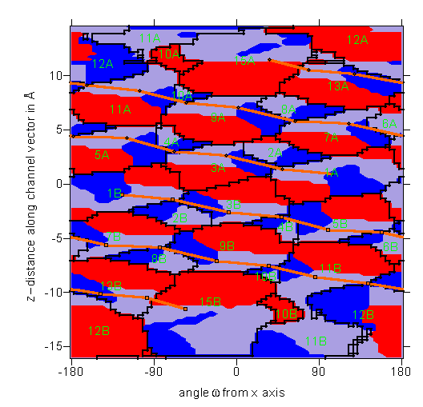

Pore Dimensions of Ion Channels: the pore surface of gramicidin A


Map of the internal surface of gramicidin A
This map shows the distribution of the atom type lining the
internal surface of the gramicidin channel form
(structure solved by Ketchem et al. (1992)13).
If the internal surface is lined by an oxygen atom then the map
is coloured red, if the closest neighbour is a nitrogen atom the
colour is blue and all other atoms (main chain carbonyls) are
coloured grey. Note that hydrogen atoms are excluded from
consideration. Black lines separate areas contacted by different
residues (each is labelled). The orange line marks the projection
that a line joining the alpha carbons of each residue makes in
the coordinate space. It is interesting to note the broad bands
of red running around the channel showing that carbonyl oxygen atoms
line more of the pore than the nitrogen atoms.
The picture was created using the
surfer program.

If the coordinate system used confuses you then this
picture should make things clearer.
Oliver S. Smart
(last modified 20/12/96)